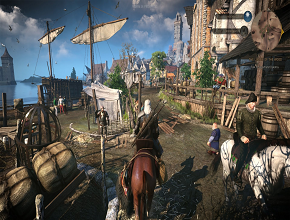

The story
The storyline of the game

The opening cutscene depicts Yennefer fleeing some unknown danger in the midst of a large
battle and Geralt and Vesemir several days later tracking her escape from various signs left in her
wake. At the scene's conclusion the story officially starts with Geralt in a guest room at Kaer
Morhen, the stronghold of the witchers in the Blue Mountains. After proceeding through brief
tutorials on
movement and combat mechanics, and the sudden and terrifying appearance of the Wild Hunt, we learn
that the time Geralt is actually dreaming the events at Kaer Morhen. Geralt awakes to discuss his
dream
with Vesemir and they resume their tracking of Yennefer's flight as seen in the opening scene.
WhiteOrchardScene
Quaint village of White Orchard shows signs of the scars of war
Vesemir and Geralt make their way to White Orchard where they learn that Yennefer was last seen
speaking
with the Nilfgaardian captain before she raced off. The captain agrees to tell Geralt where Yennefer
went in exchange for ridding the town of a griffin that has recently been attacking villagers on the
main road. Geralt examines the beast's nest and sets a trap for the griffin and with the help of
Vesemir
soon defeats the griffin. The nilfgaardian captain says that Yennefer has rode on to Vizima. Just as
Geralt and Vesemir are about to depart they are approached by none other than Yennefer herself.
Yennefer
insists that Geralt follow her back to Vizima for an audience with the emperor Emhyr var Emreis.
Vesemir
decides it would be best if he returned to Kaer Morhen.


Firesidechat
Geralt and Yen discuss the plan to find Ciri
Even when crossing the short distance between White Orchard and Vizma, Geralt and Yennefer cannot
have a
quiet moment as they are soon set upon by hounds of the Wild Hunt. Fortunately for our hero no harm
comes to either Geralt or Yennefer and they arrive safely in Vizima where Emperor Emhyr enlists
Geralt's
aid in finding the emperor's daughter Ciri who is believed to have the Wild Hunt closing in on her.
Geralt agrees to help and meets with Yennefer to formulate a plan. Geralt intends to begin his
search in
Velen and meet with Triss Merigold to join forces in the search. Meanwhile Yennefer departs to
investigate a magical disturbance in Skellige that might be linked to Ciri.